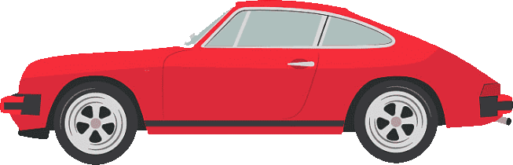

La historia de Porsche
Aunque la historia del fabricante alemán comienza oficialmente con el desarrollo del modelo 356 (1948), lo cierto es que, años antes, Ferdinand Porsche ya había diseñado varios proyectos para otras marcas a través de su propia oficina de ingeniería. De hecho, suyo es el Volkswagen Beetle, vehículo del que adquirieron sus rasgos los primeros Porsche. Es en la localidad austríaca de Gmünd donde, en el verano de 1947, Ferry Porsche comienza a construir el roadster biplaza con motor trasero y chasis de aluminio basado en el proyecto Volkswagen que había iniciado su padre. En febrero del año siguiente, el 356 “Nº 1” está listo para rodar y compite en Innsbruck -obtiene el mejor resultado de su categoría-, como una puesta a punto de cara a su posterior producción. Le sigue el prototipo 356/2, también creado sobre la base de un chasis de aluminio diseñado por Erwin Komenda: en 1950 ya hay fabricadas 52 unidades en versión coupé y cabrio. Este crecimiento
La herencia de Volkswagen

Una vez que la producción se traslada a Alemania, comienza a utilizarse acero como materia prima para la construcción del chasis del 356. La producción es modesta (unas 100 unidades al año), aunque una década más tarde aumenta hasta las 25.000 unidades. A mediados de los '50, Ferry Porsche considera necesario fabricar un nuevo modelo que esté en consonancia con los aires de modernidad que ya empiezan a respirarse en la marca. La idea es desvincularse de la herencia de Volkswagen en lo que se refiere a motores y componentes: la única herencia que debe conservar el sustituto del 356 es la colocación del propulsor y la refrigeración por aire. El objetivo último de Porsche es crear un modelo más exclusivo y potente. Mientras, las sucesivas generaciones del 356, A, B y C, aumentan por miles el número de unidades producidas y, con ellas, el éxito de una marca que todavía no se ha convertido en una fábrica de sueños.
El nacimiento de un mito: llega el 911

Tras estudiar diferentes soluciones para diseñar el sustituto del 356, al final se impone la propuesta del hijo mayor de Ferry, Ferdinand Alexander. Este planteamiento hace que el padre deseche su idea de un deportivo de cuatro plazas en favor de una estética más agresiva, que aún se mantiene impertérrita hoy en la segunda generación de la serie 997. Nace así el proyecto conocido como "901": un coupé 2+2 plazas con un motor bóxer de 6 cilindros desarrollado por Ferdinand Piëch, el sobrino de Ferry Porsche. El primer prototipo puede verse en el Salón de Fráncfort en 1963, aunque la presentación del modelo de producción no tiene lugar hasta octubre de 1964. La razón por la que cambia su denominación de "901" a "911" se debe a que Peugeot reclama su derecho sobre las tres cifras con el cero en medio para sus modelos. Al 911 coupé, que comparte sus inicios con la última serie del 356, le siguen a mitad de década variantes de nuevo cuño como el Targa, a medio camino entre el coupé y el cabrio.